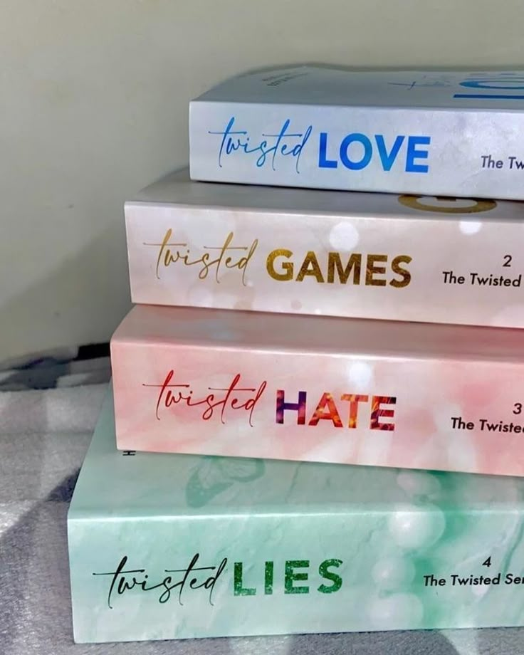
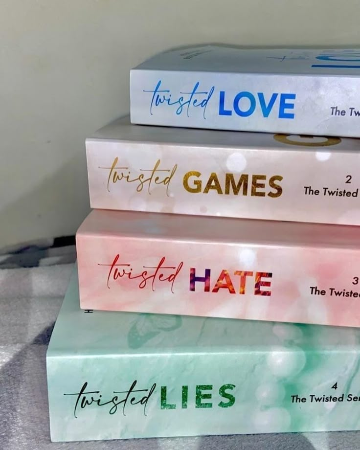
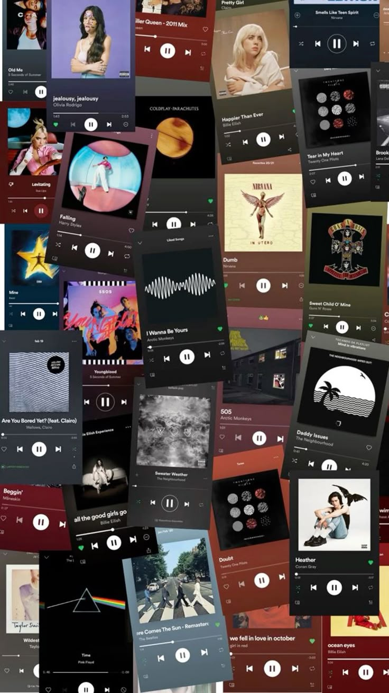
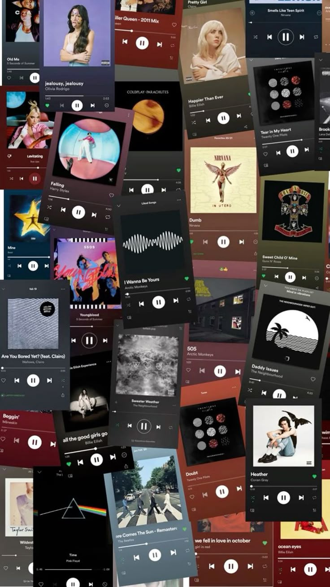

Mi Nombre es Raynielys. Yo soy una joven alegre y creativa,
conocida por su entusiasmo y su amor por la vida. Disfruta de actividades como leer,
escuchar música, dibujar y pasar tiempo con sus seres queridos. Tiene un gusto especial por los
colores vivos, siendo el rojo y el azul sus favoritos, ya que le transmiten tranquilidad y
libertad. A sus 15 años, Raynielys se destaca por su personalidad amigable y su capacidad de
conectar fácilmente con las personas. Es una persona soñadora pero también determinada,
que siempre busca aprender cosas nuevas y superarse a sí misma.
Sus intereses abarcan desde el arte y la naturaleza hasta la tecnología y los animales,
lo que la convierte en alguien versátil y llena de ideas.

Yasmily es una adolescente de 14 años llena de imaginación y personalidad.
Le encanta disfrutar de su tiempo libre viendo series, sumergiéndose en historias emocionantes,
personajes únicos y tramas que la hacen reír, emocionarse o reflexionar. Su color favorito es el
negro, que para ella representa elegancia, fuerza y un toque de misterio. Yasmily se caracteriza por ser una persona tranquila,
observadora y con una mente curiosa. Tiene un gran sentido del gusto, una fuerte identidad y no teme ser ella misma.

Yannely es una profesora dedicada y apasionada por la enseñanza, con 34 años de edad.
A lo largo de su carrera, ha demostrado un compromiso firme con la formación de sus estudiantes, guiándolos con paciencia,
empatía y conocimientos sólidos. Cree firmemente en el poder transformador de la educación y trabaja día a día para marcar una
diferencia positiva en la vida de cada estudiante que pasa por su aula.

Raulí es un hombre de 41 años conocido por su dedicación al trabajo y su fuerte sentido de responsabilidad.
Se desempeña en el mundo automotriz, donde ha construido una carrera sólida trabajando con carros.
Más allá de su trabajo, Raulí es un padre ejemplar, comprometido con el bienestar y el futuro de su familia.
Con una personalidad trabajadora, honesta y perseverante, Raulí es el reflejo de un hombre que no se rinde ante las dificultades.


 


 
